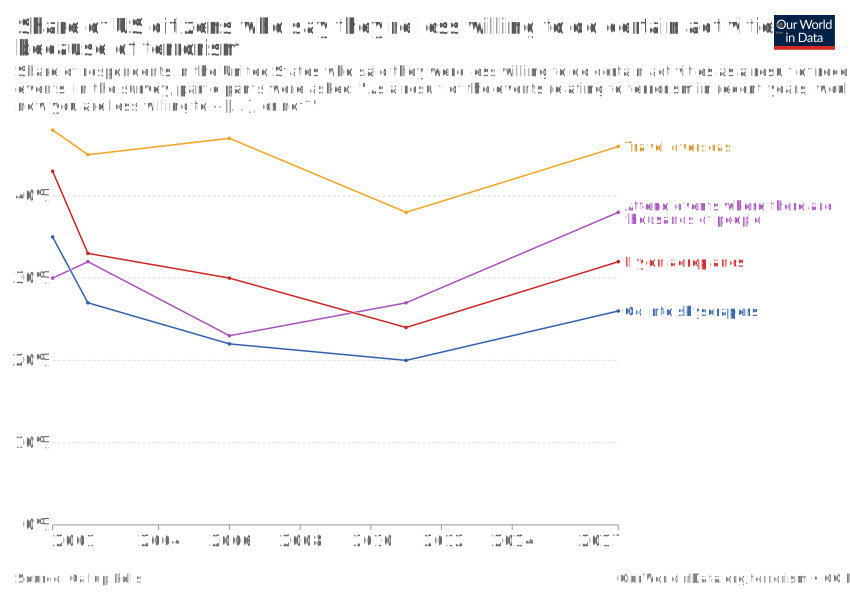

Introduction
Summary: US Travel, Tourism, and Terrorism
Warning
Trigger warning: The following content contains descriptions of violent acts and extremism related to terrorism, which may be disturbing or triggering for some readers.
Terrorism is a puzzling and gripping phenomenon. Its relationship with tourism is intricate and multi-dimensional. Interestingly, international terrorism and tourism share common traits, such as being transnational in nature, involving citizens from different nations, and utilizing travel and communication technologies. The impact of terrorist attacks extends to several other industries related to tourism, including airlines, hotels, restaurants, and tourist-oriented shops and services (Baker, n.d.).
Baker, David. n.d. “The Effects of Terrorism on the Travel and Tourism Industry.” International Journal of Religious Tourism and Pilgrimage. https://arrow.tudublin.ie/cgi/viewcontent.cgi?article=1052&context=ijrtp.
“World Tourism Organization.” n.d. UNWTO. https://www.unwto.org/.
Receipts from international tourism in destinations around the world grew by 4% in 2012 reaching USD 1,075 billion. This growth is equal to a 4% increase in international tourist arrivals over the previous year which reached 1,035 million in 2012. An additional USD 219 billion was recorded in receipts from international passenger transport, bringing total exports generated by international tourism in 2012 to US$ 1.3 trillion (“World Tourism Organization,” n.d.).
The Global Terrorism Database™ (GTD) (“Codebook Methodology Inclusion Criteria and Variables - UMD,” n.d.) defines a terrorist attack as the threatened or actual use of illegal force and violence by a nonstate actor to attain a political, economic, religious, or social goal through fear, coercion, or intimidation. In practice this means in order to consider an incident for inclusion in the GTD (“Codebook Methodology Inclusion Criteria and Variables - UMD,” n.d.), all three of the following attributes must be present:
The incident must be intentional – the result of a conscious calculation on the part of a perpetrator.
The incident must entail some level of violence or immediate threat of violence, including property violence, as well as violence against people.
The perpetrators of the incidents must be sub-national actors. The database does not include acts of state terrorism.
In addition, at least two of the following three criteria must be present for an incident to be included in the GTD (“Codebook Methodology Inclusion Criteria and Variables - UMD,” n.d.):
“Codebook Methodology Inclusion Criteria and Variables - UMD.” n.d. Global Terrorism Database. University of Maryland. https://www.start.umd.edu/gtd/downloads/Codebook.pdf.
Criterion 1: The act must be aimed at attaining a political, economic, religious, or social goal. In terms of economic goals, the exclusive pursuit of profit does not satisfy this criterion. It must involve the pursuit of more profound, systemic economic change.
Criterion 2: There must be evidence of an intention to coerce, intimidate, or convey some other message to a larger audience (or audiences) than the immediate victims. It is the act taken as a totality that is considered, irrespective if every individual involved in carrying out the act was aware of this intention. As long as any of the planners or decision-makers behind the attack intended to coerce, intimidate or publicize, the intentionality criterion is met.
Criterion 3: The action must be outside the context of legitimate warfare activities. That is, the act must be outside the parameters permitted by international humanitarian law, insofar as it targets non-combatants
Public US Sentiment
The September 11 attacks, commonly known as 9/11, on the World Trade Center in 2001 were a historic aberration in US history, with significant and far-reaching impacts on national security policy, international relations, and the collective psyche of the American people. Immediately after the 9/11 attacks, public sentiment in the US was marked by a strong sense of shock, anger, and a desire for justice, along with a surge in patriotism and a willingness to support government actions to prevent future terrorist attacks. There was also a significant increase in concerns about national security and a greater willingness to sacrifice personal freedoms in the interest of greater security. The figure below conveys that, immediately after 9/11, a share of the US public’s stance on venturing outdoors and travelling overseas stagnated for the next decade. The public’s confidence seemed to restore around 2011.

Questions to Adress
How have the types of terror attacks in the United States evolved over the last 25 years?
How have the targets of terror attacks in the United States evolved over the last 25 years?
Do certain states in the United States suffer more terrorist attacks than others do?
Are we able to use time-series data on terrorist attacks to predict future attacks and their different kinds in the United States?
Are we able to use time-series data on military expenditure to predict the government’s future spending in the United States?
Have certain terrorist attacks on the United States prompted sudden changes in military expenditure over the past 50 years?
Do terror attacks outside the United States prompt increased domestic military expenditure in the United States?
What is the correlation between terror attacks and military expenditure over time in the United States?
To what extent do terror attacks impact the United State’s stance on people entering the United States with B-2 visa (tourist) status?
To what extent do Lockheed Martin’s stock prices and the Dow Jones U.S. Travel & Tourism Index help us understand trends in terrorist attacks in the United States?
References
Baker , David. “The Effects of Terrorism on the Travel and Tourism Industry .” Technological University Dublin. International Journal of Religious Tourism and Pilgrimage. Accessed February 1, 2023. https://arrow.tudublin.ie/cgi/viewcontent.cgi?article=1052&context=ijrtp.
“Codebook Methodology Inclusion Criteria and Ariables - UMD.” Codebook Methodology Inclusion criteria and variables - UMD. University of Maryland. Accessed February 1, 2023. https://www.start.umd.edu/gtd/downloads/Codebook.pdf.
“World Tourism Organization.” UNWTO. Accessed February 1, 2023. https://www.unwto.org/.